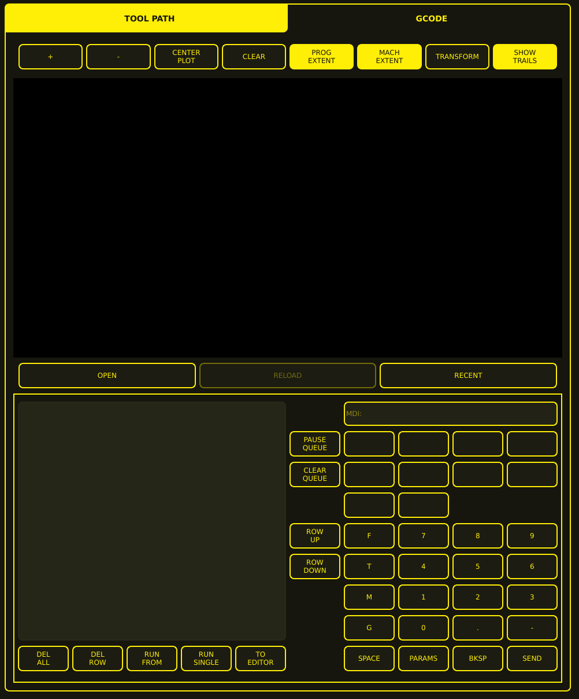

MDI (Manual Data Input)
The MDI area combines a tool-path viewer with controls for loading programs, managing an MDI command queue, entering commands through an on-screen keypad, and sending commands to the machine controller.

Layout Overview
The MDI area is divided into two principal horizontal sections:
Tool Path viewer — upper portion with toolbar and plotting area
MDI command and queue workspace — lower portion with command queue, input field, and on-screen keypad
Tool Path / G-code Tabs
Two tabs span the top of the screen:
TOOL PATH — filled yellow, selected view showing the plotted geometry
GCODE — dark background with yellow text, alternate view for raw G-code
Tool-path Toolbar
Eight controls appear below the tabs:
Control |
Description |
|---|---|
+ |
Increase the plot scale (zoom in) |
- |
Decrease the plot scale (zoom out) |
CENTER PLOT |
Centre the plotted geometry in the viewport |
CLEAR |
Clear the visible plot |
PROG EXTENT |
Fit or display the program extents |
MACH EXTENT |
Fit or display the machine extents |
TRANSFORM |
Access plot or coordinate transformation |
SHOW TRAILS |
Display tool or movement trails |
Some buttons (PROG EXTENT, MACH EXTENT, SHOW TRAILS) appear filled yellow, indicating an active state.
Tool-path Viewport
A large black rectangular viewport displays the program geometry. No tool path or part geometry is visible when no program is loaded.
Program File Controls
Three buttons below the viewport manage program files:
Button |
Description |
|---|---|
OPEN |
Open a program file |
RELOAD |
Reload the current program (may be unavailable) |
RECENT |
Access recently opened programs |
Command Queue
The lower-left area displays the MDI command queue. Commands entered via the MDI field are added to this list for batch execution.
MDI Input
The MDI: input field at the top of the lower-right workspace accepts manual G-code commands.
Queue Controls
Two buttons manage the command queue:
Button |
Description |
|---|---|
PAUSE QUEUE |
Pause execution of the command queue |
CLEAR QUEUE |
Clear all commands from the queue |
On-screen Keypad
The lower-right area contains a structured keypad for entering MDI commands via touchscreen.
Letter Keys
A vertical column of command-letter keys:
F — Feed rate
T — Tool
M — M-code
G — G-code
Numeric Keys
Calculator-style numeric keypad:
Row |
Keys |
|---|---|
Upper |
|
Middle |
|
Lower |
|
Bottom |
|
Command Controls
The bottom row contains:
Button |
Description |
|---|---|
SPACE |
Insert a space |
PARAMS |
Access parameter values |
BKSP |
Backspace — delete last character |
SEND |
Submit the command to the machine controller |
Using MDI
Basic Entry
Type a G-code command using the on-screen keypad or the MDI input field.
Press SEND to execute the command.
Queueing Commands
Enter commands via the MDI field or keypad.
Commands are added to the queue list.
Use queue controls to manage execution:
RUN SINGLE — execute one command at a time
RUN FROM — start execution from a selected row
PAUSE QUEUE / CLEAR QUEUE — control queue execution
DEL ROW / DEL ALL — remove commands from the queue
TO EDITOR — transfer queue content to the editor
Common MDI Commands
Command |
Description |
|---|---|
|
Rapid Z to 50 mm |
|
Linear Z to 5 mm at 25 mm/min |
|
Torch on |
|
Torch off |
|
Rotate WCS by 5 degrees |
|
Set WCS zero at current position |
|
Set Z offset to zero |
MDI Limitations
MDI commands are executed immediately and cannot be undone.
Complex G-code programs should be loaded as files rather than entered via MDI.
Some plasma-specific G-codes may require special handling — see the G-code Syntax reference.